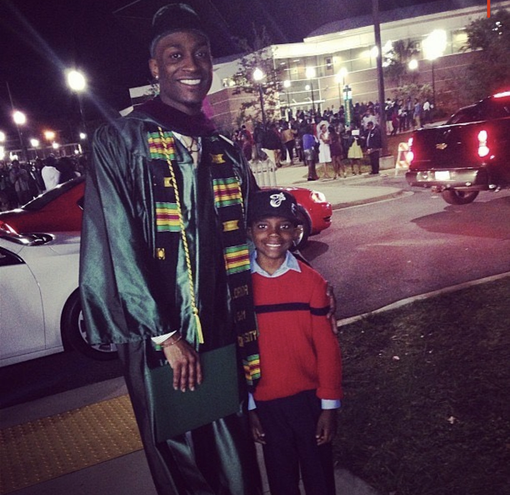
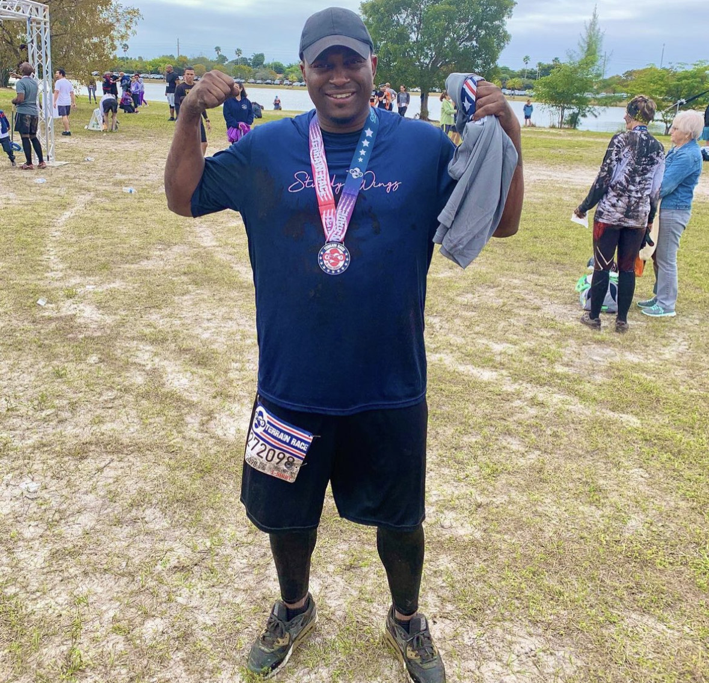
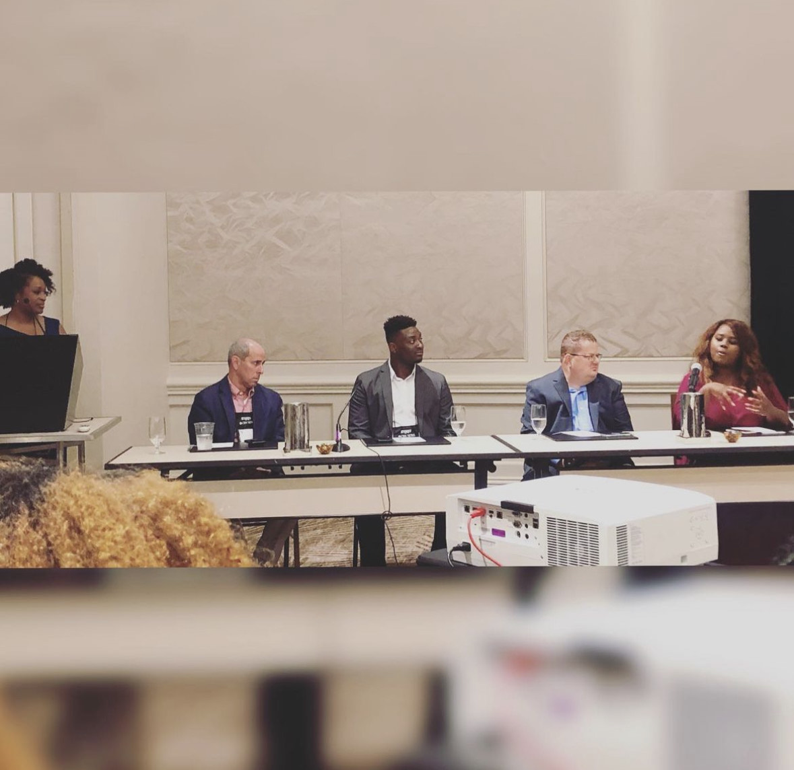

Graduation Form Florida A&M University

One of my greatest a accomplishments is graduating from Florida A&M University with a bachelors degree in communications.
Both of my parents are alumni's from Florida A&M University, and I wanted to keep the tradition in the family. Growing up in
Florida there weren't many opportunities based on the environment where I lived, but my parents always told me that a good education
can go a long way.
Competing In The Terrain 5K Race

The Terrain Race was my first 5k race. I was able to complete this race which was filled with obstacles along the way. I'm all
about building my body, mind, and soul, these races strengthen each one of those attributes. I really had to dig deep to give
myself the opportunity to come out on top. I trained for a few weeks to give myself the best chance to go the distance. This race
was some of the most fun I ever had.
Being Selected To Speak At The National Association Of Black Journalist Conference

The National Association of Black Journalist Conference selected me to be one of their panelists. At the time I didn't
realize how valuable my story and experience could impact other journalist careers. At the conference I spoke about my experience with working at
NBC and being a manager at the company. Although the attendees were there to hear me speak, I felt like I learned a lot from the other panelists.
This was an absolute dream experience that I'm grateful for.